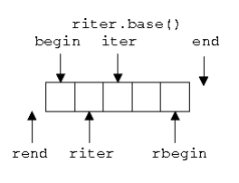

泛型算法
- 泛型算法：可以支持多种类型的算法
- 泛型算法通常来说都不复杂，但优化足够好
- 一些泛型算法与方法同名，实现功能类似，此时建议调用方法而非算法
std::findV.S.std::map::find
泛型算法的分类
- 读算法：给定迭代区间，读取其中的元素并进行计算
accumulate/find/count
- 写算法：向一个迭代区间中写入元素
- 单纯写操作：
fill/fill_n - 读 + 写操作：
transform/copy - 注意：写算法一定要保证目标区间足够大
- 单纯写操作：
- 排序算法：改变输入序列中元素的顺序
sort/unique
#include <iostream>
#include <algorithm>
#include <vector>
#include <string>
#include <cctype>
int main()
{
// 含有数个重复元素的 vector
std::vector<int> v{1, 2, 1, 1, 3, 3, 3, 4, 5, 4};
auto print = [&] (int id)
{
std::cout << "@" << id << ": ";
for (int i : v)
std::cout << i << ' ';
std::cout << '\n';
};
print(1);
// 移除相继（毗邻）的重复元素
auto last = std::unique(v.begin(), v.end());
// v 现在保有 {1 2 1 3 4 5 4 x x x} ，其中 x 不确定
v.erase(last, v.end());
print(2);
// sort 后 unique 以移除所有重复
std::sort(v.begin(), v.end()); // {1 1 2 3 4 4 5}
print(3);
last = std::unique(v.begin(), v.end());
// v 现在保有 {1 2 3 4 5 x x} ，其中 x 不确定
v.erase(last, v.end());
print(4);
}
/*
* @1: 1 2 1 1 3 3 3 4 5 4
* @2: 1 2 1 3 4 5 4
* @3: 1 1 2 3 4 4 5
* @4: 1 2 3 4 5
*/
泛型算法使用迭代器实现元素访问
迭代器的分类
- 输入迭代器：可读，可递增 典型应用为 ——
find算法 - 输出迭代器：可写，可递增 典型应用为 ——
copy算法 - 前向迭代器：可读写，可递增 典型应用为 ——
replace算法 - 双向迭代器：可读写，可递增递减 典型应用为 ——
reverse算法 随机访问迭代器：可读写，可增减一个整数 典型应用为 ——
sort算法一些算法会根据迭代器类别的不同引入相应的优化：如
distance算法
一些特殊的迭代器
- 插入迭代器：
back_insert_iterator/front_insert_iterator/insert_iterator
#include <iostream>
#include <algorithm>
#include <vector>
int main()
{
std::vector<int> x;
std::fill_n(std::back_insert_iterator<std::vector<int>>(x), 10, 3);
for (auto i : x)
std::cout << i << ' ';
std::cout << '\n';
// 3 3 3 3 3 3 3 3 3 3
std::vector<int> y;
std::fill_n(std::back_inserter(y), 10, 3);
for (auto j : y)
std::cout << j << ' ';
// 3 3 3 3 3 3 3 3 3 3
}
- 流迭代器：
istream_iterator / ostream_iterator
#include <iostream>
#include <algorithm>
#include <iterator>
#include <sstream>
int main()
{
std::istringstream str("1 2 3 4 5");
std::istream_iterator<int> x(str);
std::istream_iterator<int> y{};
for (; x != y; ++x)
std::cout << *x << std::endl; // 1 2 3 4 5
std::cout << *x << std::endl; // 5 迭代器已经到底
++x;
std::cout << *x << std::endl; // 5
}
#include <iostream>
#include <algorithm>
#include <iterator>
#include <sstream>
#include <numeric>
int main()
{
std::istringstream str("1 2 3 4 5");
std::istream_iterator<int> x(str);
std::istream_iterator<int> y{};
int res = std::accumulate(x, y, 0);
std::cout << res << std::endl; // 15
}
- 反向迭代器（图片选自 www.cs.helsinki.fi ）

- 移动迭代器：
move_iterator - 迭代器与哨兵（
Sentinel） - 并发算法（SIMD C++17 / C++20 ）
cppreference-execution_policy_tag
std::execution::seqstd::execution::parstd::execution::par_unseqstd::execution::unseq